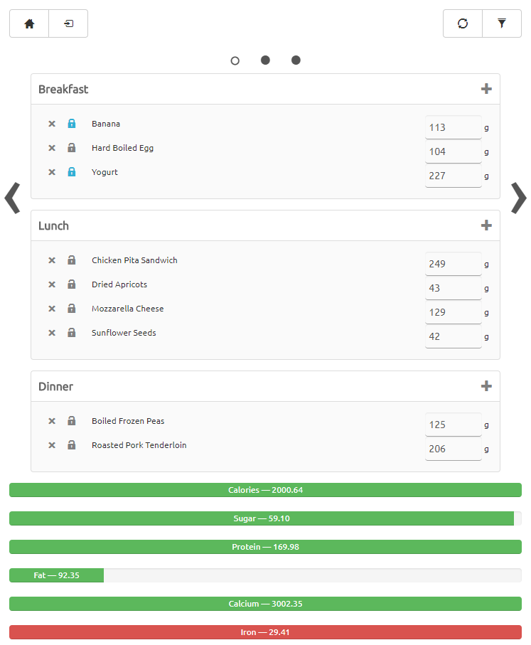
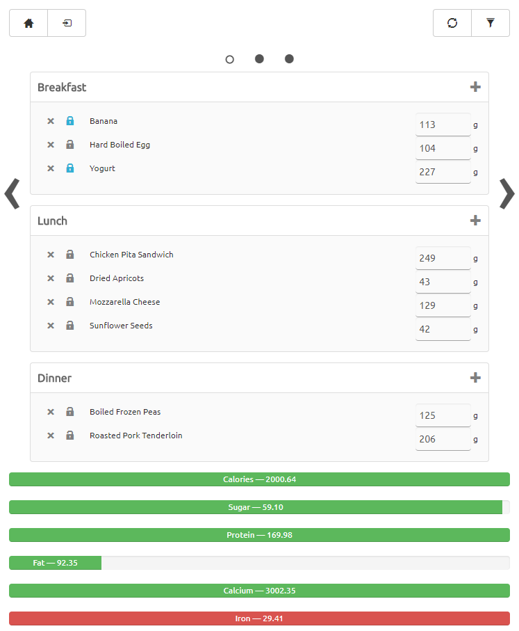

West Sacramento | 916-270-7664 | nathanial@ofiesh.com
Building scalable, highly available Java microservices from the ground up as well as refactoring existing architecture with an emphasis on Test Driven Development and Continuous Innigration.
Planning projects from requirements and user stories, running scrum, leading grooming and task breakdown, managing the Software Development Lifecycle and making sure team members are focus and unblocked.
Apache HTTPD, Apache Tomcat, Maven, Git<, Vagrant, Docker, AWS, Google Cloud
Java, Javascript, SQL, Dart, Coldfusion, Groovy, HTML, CSS
GO, Clojure, CLISP, Python, Chef, Puppet
MySQL, PostgreSQL, SQL Server, Cassandra, DynamoDB, Google Cloud Datastore, Solr, Elasticsearch
Senior Software Developer
December 2015 - Present
Lead projects designing and implementing features for valuation products and product order management.
Focused on developing and improving the performance of REST APIs, micro services and database architecture.
Made improvements to CIT and branch builder jobs in jenkins using the jenkins python api and built out CIT servers.
Converted services to DI frameworks.
Through unit and integration testing.
Senior Software Developer
August 2010 - December 2015 (5 years 4 months)
Lead roles with a team:
Created JavaScript dashboards using jQuery, jQuery UI and John Resig's Micro-Templating to manage all vendor data.
Improved existing caching strategies to always have the freshest objects cached instead of having to manually request updated cache or do mass refreshes.
Maintained and improved the existing Java EDI system when its creator left. Debugged concurrency issues that caused EDI to crash several times a day and fixed it's reliability to run consistently. Doubled the speed of the EDI processor.
Transitioned existing platforms from ColdFusion to Java REST services with java client for ColdFusion. Continued development, migration, debugging and testing Java REST services.
Fixed over 400 bugs.
Build-a-thon competition winner for "Biggest WOW factor". Created Faucet-Finder as a way to help customers find faucets based on the images of other faucets they like. It is an image comparison tool that presents a variety of faucets, and drills down finding similar looking faucets based on the similarity of the images.
Worked on Cybersource, PayPal, and Google wallet integrations in both Java and ColdFusion.
Project Manager/Software Developer
March 2010 - August 2010 (6 months)
Skills
Created a web app to calculate home values and automatically fill out appraisal forms to reduce homeowners' property tax. Used JavaScript on the front end to show calculations and comps. Used PHP on the back end with Zillow's API to do calculations and create completed PDFs.
Worked with existing sites to add e-commerce capability by integrating PayPal.
Managed the backlog, ran stand up and planning meetings.
Managed communication with existing clients.
Managed, edited and reviewed all clients' ConstantContact newsletters.
Managed the Apache server and host configurations for clients' websites.
Owner/Full Stack Developer
October 2008 - December 2009 (1 year 3 months)
Created dynamic websites from a graphic designer's mocks. Sites were either PHP or Python using Django.
Worked directly with clients to scope and produce requirements.
Added PayPal integration to e-commerce sites.
Full Stack Developer
Skills
React application for automating the creation and tracking meal plans that meet the USDA dietary guidelines.
Java REST microservices services running on a dropwizard containers.
JWT for Auth
Python microservice service running Flask.
Aggressive caching strategies to significantly reduce load and increase scalability
Responsive Styles for mobile display
 
